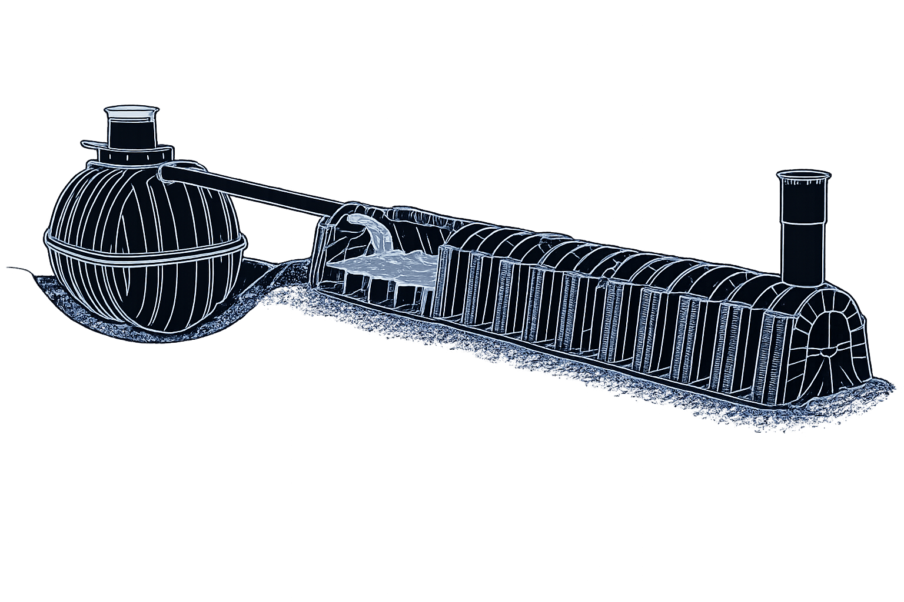

Redukcja kosztów zrzutu deszczówki do kanalizacji burzowej i budowa retencji lokalnej na obiekcie to fundament skutecznego działania.
Lokalny system retencyjny pozwala przechwycić, opóźnić i bezpiecznie rozprowadzić nadmiar wody opadowej, ograniczając ryzyko podtopień i zalania infrastruktury.
Systemy Operacyjne
02
System Rozsączający i Przechwytujący
Tunele Rozsączające
Tunele rozsączające są szczególnie efektywne podczas deszczu nawalnego. Ich ażurowa konstrukcja i brak dna pozwalają tworzyć duże ciągi robocze, które wspierają przepływ powietrza i wody.
Rozwiązanie działa nawet przy ograniczonej infiltracji gruntu i stabilizuje odpływ do sieci.
Skrzynki Rozsączające
Skrzynki retencyjne przechwytują nadmiar wody podczas opadu, a następnie oddają ją do podłoża, gdy wzrasta chłonność gruntu. Modułowa konstrukcja pozwala skalować system bez zmiany logiki pracy całej instalacji.
✓Skalowalność od pojedynczego modułu do baterii retencyjnych.
✓Bezpieczna praca pod drogami, parkingami i placami składowymi.
✓Niższe ryzyko podtopień i redukcja kosztów zrzutu deszczówki.
Diagram Techniczny1200 x 760 mm

Rysunek 02. Przepływ wody opadowej przez moduły retencyjne i elementy przechwytujące.
Rozwiązania Terenowe
03
Tunele i Skrzynki Rozsączające
Przekrój InstalacjiUkład terenowy
Rysunek 03. Przykład zabudowy systemu retencyjnego przy dużym obciążeniu użytkowym.
Elastyczna Zabudowa
Zabudowę skrzynek rozsączających można realizować na terenach o dużych obciążeniach użytkowych, takich jak drogi, nasypy kolejowe, place składowe, parkingi i lotniska.
To rozwiązanie elastyczne pod względem powierzchni i głębokości posadowienia, dostosowane do warunków inwestycji.
Studnie Chłonne
Studnie chłonne to rozwiązanie dla terenów o słabo przepuszczalnych gruntach. Bezdenny zbiornik wkopany w grunt wspiera wchłanianie deszczówki do warstw gleby i ogranicza problem stojącej wody po intensywnych opadach.
Efekty Wdrożenia
04
Korzyści z Instalacji Systemu Retencyjnego
+
Ochrona Przed Podtopieniami
Zabezpieczenie budynków i budowli przed podtopieniami oraz zalaniem podczas intensywnych opadów.
+
Niższe Koszty Stałe
Niższe opłaty za zrzut wody opadowej oraz możliwość obniżenia kosztu ubezpieczenia nieruchomości.
+
Mniejsza Infrastruktura Kanalizacyjna
Eliminacja potrzeby budowy kolektorów deszczowych dużych średnic i odciążenie sieci kanalizacyjnej.
+
Wykorzystanie i Ochrona Zasobów
Możliwość wykorzystania wody opadowej w lokalnych procesach technologicznych oraz ochrona zasobów wodnych i środowiska.
Przechwytujący System Retencyjny
Buforuje duże przepływy, przechwytuje falę nawalną i oddaje wodę do kanalizacji po napełnieniu zbiornika.
Możliwość łączenia zbiorników w baterie bez limitu pojemności.
Projektowanie Systemów Rozsączania Wód Opadowych i Ich Instalacja